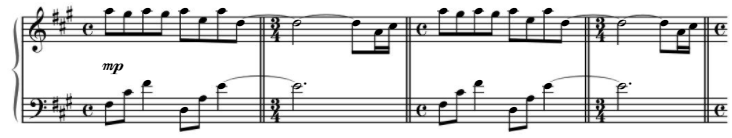

Ma Présentation
Je me nomme Tiphaine Schrenck, je suis née le 16 aout 2003 à Mulhouse. J'ai été scolarisée à l'école maternelle et élémentaire de Rosenau, j'ai ensuite été au collège Gérard de Nerval à Village-Neuf avant d'aller au lycée Jean Mermoz à Saint-Louis et d'arriver à l'IUT de Colmar en BUT Réseaux et Télécommunicatons.
Etant petite j'ai toujours adoré lire et écrire, en grandissant j'ai gardé ces passions puis au fil des années j'ai développé une certaine affinité pour la musique mais aussi pour les jeux vidéo.
C'est pourquoi j'ai choisi l'option non facultative Informatique et Création Numérique à mon arrivée en seconde, j'ai adoré suivre les différents enseignements de cette matière, que ce soit l'Arduino, l'HTML ou encore la modélisation 3D. J'ai poursuivi avec la spécialité Numérique et Sciences Informatiques les deux années qui ont suivi, c'est à ce moment que j'ai commencé à coder (en Python), que j'ai fait mes premières simulations de réseaux (sur Filius) et que j'ai approfondi mes connaissances en HTML. J'ai par ailleurs pris beaucoup de plaisir à apprendre la gestion de bases de données même si j'y ai trouvé une certaine redondance.
En prennant compte de ces nouveaux apprentissages et du fait que je souhaitais faire des travaux pratique et pas uniquement théorique, je me suis orientée vers les BUT. En approfondissant mes recherches, celui en Réseaux et Télécommunications remplissait beaucoup de mes critères, c'est ainsi que je me suis tournée vers celui de l'IUT de Colmar.
